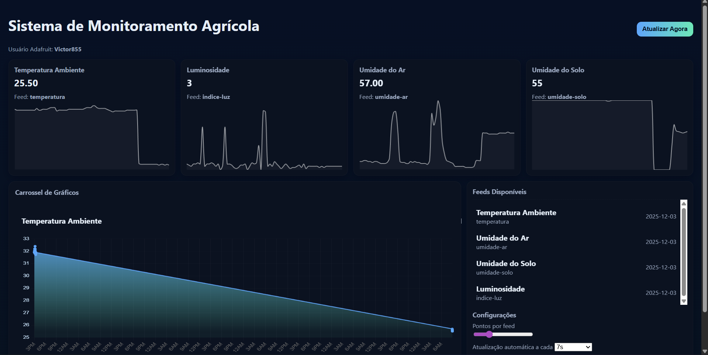

Desenvolvimento de um protótipo funcional de baixo custo para agricultura de precisão, integrando sensores IoT e Redes Neurais para otimização do manejo em pequenas propriedades.
O Problema: Métodos tradicionais de inspeção visual e contagem manual de pragas são imprecisos e lentos, resultando em decisões tardias.
A Solução: Uma solução modular que utiliza Edge Computing para processar dados localmente, oferecendo ferramentas acessíveis que antes eram restritas a grandes produtores.
Impacto Social: Foco no fortalecimento da agricultura familiar, tornando-a mais competitiva e sustentável através da tecnologia.
Detecção e análise automática da qualidade do solo e ambiente.
Identificação e contagem automática de pragas através de visão computacional.
Monitoramento visual da saúde da vegetação e geração de mapas de saúde.

Explore o código ou entre em contato para conversar sobre ele.